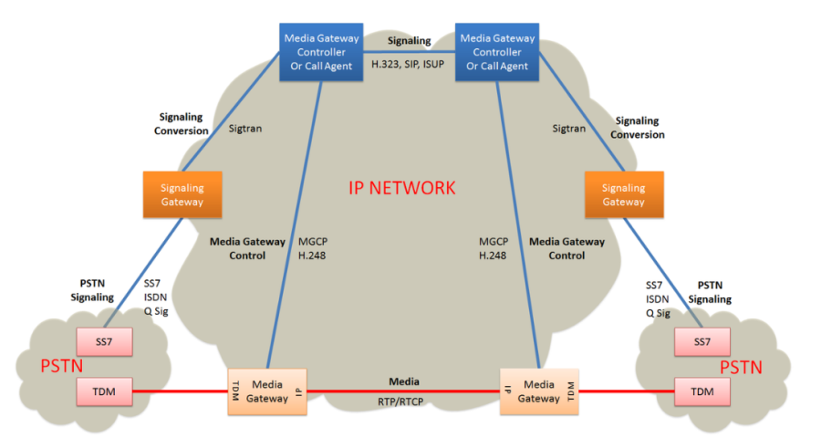
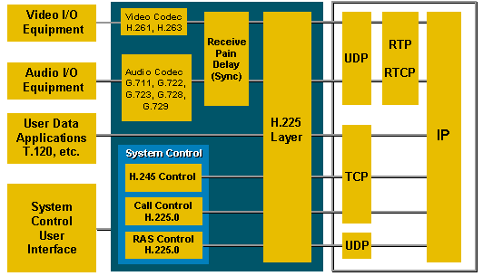
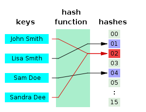
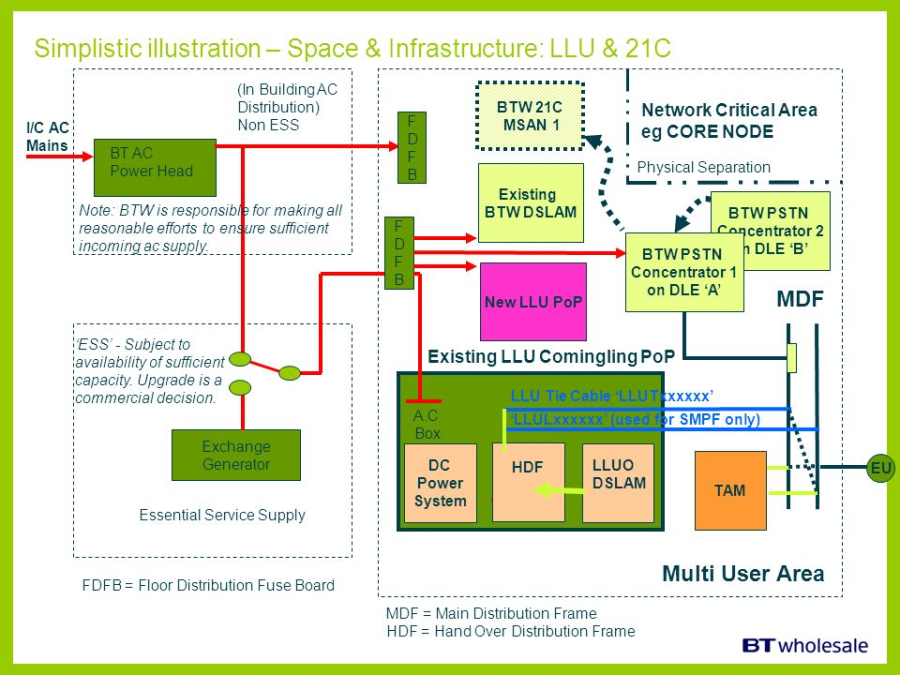
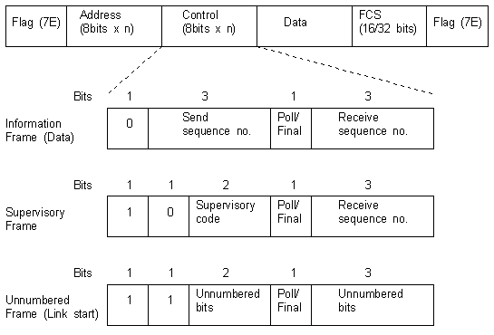
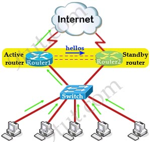
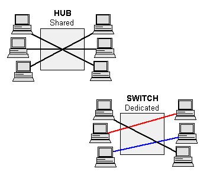

H.248 |
|
The Gateway Control Protocol (Megaco, H.248) is an implementation of the media gateway control protocol architecture for providing telecommunication services across a converged internetwork consisting of the traditional public switched telephone network (PSTN) and modern packet networks, such as the Internet. H.248 is the designation of the recommendations developed by the ITU Telecommunication Standardization Sector (ITU-T) and Megaco is a contraction of media gateway control protocol used by the earliest specifications by the Internet Engineering Task Force (IETF). The standard published in March 2013 by ITU-T is entitled H.248.1: Gateway control protocol: Version 3.
Megaco/H.248 follows the guidelines published in RFC 2805 in April 2000, entitled Media Gateway Control Protocol Architecture and Requirements. The protocol performs the same functions as the Media Gateway Control Protocol (MGCP), is however a formal standard while MGCP has only informational status. Using different syntax and symbolic representation, the two protocols are not directly interoperable. They are both complementary to H.323 and the Session Initiation Protocol (SIP) protocols.
H.248 was the result of collaboration of the MEGACO working group of the Internet Engineering Task Force (IETF) and the International Telecommunication Union Telecommunication Study Group 16. The IETF originally published the standard as RFC 3015, which was superseded by RFC 3525. The term Megaco is the IETF designation. Megaco combines concepts from MGCP and the Media Device Control Protocol (MDCP). MGCP originated from a combination of the Simple Gateway Control Protocol (SGCP) with the Internet Protocol Device Control (IPDC).
After the ITU took responsibility of the protocol maintenance, the IETF reclassified its publications as historic in RFC 5125. The ITU has published three versions of H.248, the most recent in September 2005. H.248 encompasses not only the base protocol specification in H.248.1, but many extensions defined throughout the H.248 sub-series.

|
H.323 |
|
H.323 is a recommendation from the ITU Telecommunication Standardization Sector (ITU-T) that defines the protocols to provide audio-visual communication sessions on any packet network. The H.323 standard addresses call signaling and control, multimedia transport and control, and bandwidth control for point-to-point and multi-point conferences.[1]
It is widely implemented[2] by voice and videoconferencing equipment manufacturers, is used within various Internet real-time applications such as GnuGK and NetMeeting and is widely deployed worldwide by service providers and enterprises for both voice and video services over IP networks.
It is a part of the ITU-T H.32x series of protocols, which also address multimedia communications over ISDN, the PSTN or SS7, and 3G mobile networks.
H.323 call signaling is based on the ITU-T Recommendation Q.931 protocol and is suited for transmitting calls across networks using a mixture of IP, PSTN, ISDN, and QSIG over ISDN. A call model, similar to the ISDN call model, eases the introduction of IP telephony into existing networks of ISDN-based PBX systems, including transitions to IP-based PBXs.
Within the context of H.323, an IP-based PBX might be a gatekeeper or other call control element which provides service to telephones or videophones. Such a device may provide or facilitate both basic services and supplementary services, such as call transfer, park, pick-up, and hold.

|
Half Duplex |
|
In a half-duplex system, both parties can communicate with each other, but not simultaneously; the communication is one direction at a time. An example of a half-duplex device is a walkie-talkie two-way radio that has a "push-to-talk" button; when the local user wants to speak to the remote person they push this button, which turns on the transmitter but turns off the receiver, so they cannot hear the remote person. To listen to the other person they release the button, which turns on the receiver but turns off the transmitter.

|
Happy Path |
|
See nominal path. |
Hash Function |
|
hash function is any function that can be used to map data of arbitrary size to data of a fixed size. The values returned by a hash function are called hash values, hash codes, digests, or simply hashes. Hash functions are often used in combination with a hash table, a common data structure used in computer software for rapid data lookup. Hash functions accelerate table or database lookup by detecting duplicated records in a large file. One such application is finding similar stretches in DNA sequences. They are also useful in cryptography. A cryptographic hash function allows one to easily verify that some input data maps to a given hash value, but if the input data is unknown, it is deliberately difficult to reconstruct it (or any equivalent alternatives) by knowing the stored hash value. This is used for assuring integrity of transmitted data, and is the building block for HMACs, which provide message authentication.
Hash functions are related to (and often confused with) checksums, check digits, fingerprints, lossy compression, randomization functions, error-correcting codes, and ciphers. Although the concepts overlap to some extent, each one has its own uses and requirements and is designed and optimized differently. The HashKeeper database maintained by the American National Drug Intelligence Center, for instance, is more aptly described as a catalogue of file fingerprints than of hash values.

|
HDF |
Handover Distribution Frame |
Used to terminate the cable from the exchange and to make the pairs available to the operator.

|
HDLC |
High-Level Datalink Control |
High-Level Data Link Control (HDLC) is a bit-oriented code-transparent synchronous data link layer protocol developed by the International Organization for Standardization (ISO). The original ISO standards for HDLC are as follows:
ISO 3309-1979 – Frame Structure
ISO 4335-1979 – Elements of Procedure
ISO 6159-1980 – Unbalanced Classes of Procedure
ISO 6256-1981 – Balanced Classes of Procedure
The current standard for HDLC is ISO/IEC 13239:2002, which replaces all of those standards.
HDLC provides both connection-oriented and connectionless service.
HDLC can be used for point-to-multipoint connections via the original master-slave modes Normal Response Mode (NRM) and Asynchronous Response Mode (ARM), but they are now rarely used; is now used almost exclusively to connect one device to another, using Asynchronous Balanced Mode (ABM).

|
HDSL |
High Speed Digital Subscriber Line (also known as High-speed Digital Subscriber Loop) |
A copper delivered service on Copper Wideband Serving Section (CWSS). It is subject to reach limitations and is used primarily to provide 2 Mbit service to singleton sites. |
Heartbeat Retrospective |
|
The team meets regularly to reflect on the most significant events that occurred since the previous such meeting, and identify opportunities for improvement. |
HiFi Prototype |
|
See high fidelity prototype. |
High Fidelity Prototype |
|
Mockup of a system using a software or technology based tool, usually one with a RAD environment, e.g., Visual Basic or Delphi. |
High Level Design |
HLD |
Design level between architecture and low level design. Focuses defining the details of the software solution at levels abstracted from their construction. See CxStand_Design for more information. |
HLR |
Home Location Register |
The home location register (HLR) is a central database that contains details of each mobile phone subscriber that is authorized to use the GSM core network. There can be several logical, and physical, HLRs per public land mobile network (PLMN), though one international mobile subscriber identity (IMSI)/MSISDN pair can be associated with only one logical HLR (which can span several physical nodes) at a time.
The HLRs store details of every SIM card issued by the mobile phone operator. Each SIM has a unique identifier called an IMSI which is the primary key to each HLR record.
Another important item of data associated with the SIM are the MSISDNs, which are the telephone numbers used by mobile phones to make and receive calls. The primary MSISDN is the number used for making and receiving voice calls and SMS, but it is possible for a SIM to have other secondary MSISDNs associated with it for fax and data calls. Each MSISDN is also a primary key to the HLR record. The HLR data is stored for as long as a subscriber remains with the mobile phone operator.
Examples of other data stored in the HLR against an IMSI record is:
- GSM services that the subscriber has requested or been given.
- General Packet Radio Service (GPRS) settings to allow the subscriber to access packet services.
- Current location of subscriber (VLR and serving GPRS support node/SGSN).
- Call divert settings applicable for each associated MSISDN.
The HLR is a system which directly receives and processes MAP transactions and messages from elements in the GSM network, for example, the location update messages received as mobile phones roam around.
|
Hotfix |
|
code (sometimes called a patch) that fixes a bug in a product. |
How Requirement |
|
Often a synonym for non-functional requirement. Sometimes used to refer to design issues. |
How Well Requirement |
|
Synonym for non-functional requirement. |
HSRP |
Hot Standby Router Protocol |
In computer networking, the Hot Standby Router Protocol (HSRP) is a Cisco proprietary redundancy protocol for establishing a fault-tolerant default gateway. Version 1 of the protocol was described in RFC 2281 in 1998. There is no RFC for version 2 of the protocol.
The protocol establishes an association between gateways in order to achieve default gateway failover if the primary gateway becomes inaccessible. HSRP gateways send multicast hello messages to other gateways to notify them of their priorities (which gateway is preferred) and current status (active or standby).

|
HSS |
Home subscriber server |
The home subscriber server (HSS), or user profile server function (UPSF), is a master user database that supports the IMS network entities that actually handle calls. It contains the subscription-related information (subscriber profiles), performs authentication and authorization of the user, and can provide information about the subscriber's location and IP information. It is similar to the GSM home location register (HLR) and Authentication centre (AuC).
|
HTTP |
Hypertext Transfer Protocol |
The Hypertext Transfer Protocol (HTTP) is an application protocol for distributed, collaborative, and hypermedia information systems.[1] HTTP is the foundation of data communication for the World Wide Web.
Hypertext is structured text that uses logical links (hyperlinks) between nodes containing text. HTTP is the protocol to exchange or transfer hypertext.
Development of HTTP was initiated by Tim Berners-Lee at CERN in 1989. Standards development of HTTP was coordinated by the Internet Engineering Task Force (IETF) and the World Wide Web Consortium (W3C), culminating in the publication of a series of Requests for Comments (RFCs). The first definition of HTTP/1.1, the version of HTTP in common use, occurred in RFC 2068 in 1997, although this was made obsolete by RFC 2616 in 1999 and then again by the RFC 7230 family of RFCs in 2014.
A later version, the successor HTTP/2, was standardized in 2015, and is now supported by major web servers and browsers over TLS using ALPN extension where TLS 1.2 or newer is required
Example session
Below is a sample conversation between an HTTP client and an HTTP server running on www.example.com, port 80. As mentioned in the previous sections, all the data is sent in a plain-text (ASCII) encoding, using a two-byte CR LF ('\r\n') line ending at the end of each line.
Client request
GET /index.html HTTP/1.1
Host: www.example.com
Server response
HTTP/1.1 200 OK
Date: Mon, 23 May 2005 22:38:34 GMT
Content-Type: text/html; charset=UTF-8
Content-Length: 138
Last-Modified: Wed, 08 Jan 2003 23:11:55 GMT
Server: Apache/1.3.3.7 (Unix) (Red-Hat/Linux)
ETag: "3f80f-1b6-3e1cb03b"
Accept-Ranges: bytes
Connection: close
<html>
<head>
<title>An Example Page</title>
</head>
<body>
Hello World, this is a very simple HTML document.
</body>
</html>
|
HTTPS |
|
HTTP Secure (HTTPS) is an extension of the Hypertext Transfer Protocol (HTTP) for secure communication over a computer network, and is widely used on the Internet. In HTTPS, the communication protocol is encrypted using Transport Layer Security (TLS), or formerly, its predecessor, Secure Sockets Layer (SSL). The protocol is therefore also often referred to as HTTP over TLS, or HTTP over SSL.
The principal motivation for HTTPS is authentication of the accessed website and protection of the privacy and integrity of the exchanged data while in transit. It protects against man-in-the-middle attacks. The bidirectional encryption of communications between a client and server protects against eavesdropping and tampering of the communication. In practice, this provides a reasonable assurance that one is communicating without interference by attackers with the website that one intended to communicate with, as opposed to an impostor.
Historically, HTTPS connections were primarily used for payment transactions on the World Wide Web, e-mail and for sensitive transactions in corporate information systems. Since 2018, HTTPS is used more often by webusers than the original non-secure HTTP, primarily to protect page authenticity on all types of websites; secure accounts; and keep user communications, identity, and web browsing private. |
Hub |
|
An Ethernet hub, active hub, network hub, repeater hub, multiport repeater, or simply hub is a network hardware device for connecting multiple Ethernet devices together and making them act as a single network segment. It has multiple input/output (I/O) ports, in which a signal introduced at the input of any port appears at the output of every port except the original incoming. A hub works at the physical layer (layer 1) of the OSI model. A repeater hub also participates in collision detection, forwarding a jam signal to all ports if it detects a collision. In addition to standard 8P8C ("RJ45") ports, some hubs may also come with a BNC or an Attachment Unit Interface (AUI) connector to allow connection to legacy 10BASE2 or 10BASE5 network segments.
Hubs are now largely obsolete, having been replaced by network switches except in very old installations or specialized applications. As of 2011, connecting network segments by repeaters or hubs is deprecated by IEEE 802.3.

|
human factors |
|
the study of how humans behave physically and psychologically in relation to particular environments, products, or services. |
Hungarian notation |
|
Hungarian notation is an identifier naming convention in computer programming, in which the name of a variable or function indicates its intention or kind, and in some dialects its type. The original Hungarian Notation uses intention or kind in its naming convention and is sometimes called Apps Hungarian as it became popular in the Microsoft Apps division in the development of Word, Excel and other apps. As the Microsoft Windows division adopted the naming convention, they used the actual data type for naming, and this convention became widely spread through the Windows API; this is sometimes called Systems Hungarian notation.
- bBusy : boolean
- chInitial : char
- cApples : count of items
- dwLightYears : double word (Systems)
- fBusy : flag (or float)
- nSize : integer (Systems) or count (Apps)
- iSize : integer (Systems) or index (Apps)
- fpPrice: floating-point
- dbPi : double (Systems)
- pFoo : pointer
- rgStudents : array, or range
- szLastName : zero-terminated string
- u16Identifier : unsigned 16-bit integer (Systems)
- u32Identifier : unsigned 32-bit integer (Systems)
- stTime : clock time structure
- fnFunction : function name
|
{kind=link}
{kind=link}
{kind=link}
{kind=link}
{kind=link}
{kind=link}
{kind=link}